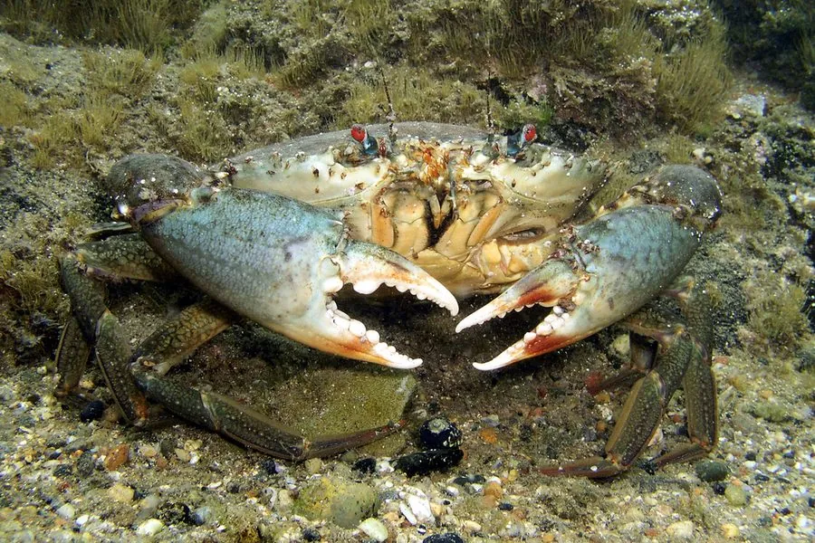

甲壳动物 · 动物界
锯缘青蟹 Scylla serrata

甲壳青绿、螯足粗壮的常见食用蟹，栖息在红树林和河口泥滩，中国南方养殖广泛，是经济价值很高的养殖蟹类。
- 分类
- 门节肢动物门纲软甲纲目十足目科梭子蟹科属青蟹属
- 栖息环境
- 红树林、河口和潮间带泥滩，掘洞而居
- 地理分布
- 印度—西太平洋，中国南方沿海至东南亚和澳大利亚
- 保护级别
- 暂无评估；野生资源受红树林减少影响
物种志
锯缘青蟹头胸甲呈横椭圆形，甲面光滑，前侧缘有锯齿，体色青绿至墨绿，螯足粗壮，腕节和掌节外侧有棘刺。雌蟹腹部圆形，雄蟹腹部三角形，个体较大，甲宽可达 20 cm 以上。
它栖息在红树林、河口和潮间带的泥滩，昼伏夜出，捕食贝类、小鱼、虾蟹和腐肉，性情凶猛，掘洞而居。锯缘青蟹原产于印度—西太平洋，中国南方沿海常见，是重要的海水养殖蟹类，膏蟹和肉蟹都很受欢迎。人工养殖通过池塘和围网进行，需要控制水质和投喂；野生种群受红树林减少和过度捕捞影响。赶海时要注意它的螯足，被夹住会很疼。锯缘青蟹的肉质紧实，蟹膏丰满，是南方沿海餐桌上的常见海鲜。
形态与习性
- 食性捕食贝类、小鱼、虾蟹和腐肉
- 体型甲宽可达 20 cm 以上
- 识别甲壳青绿，前侧缘有锯齿，螯足粗壮
- 习性昼伏夜出，性情凶猛，掘洞而居
- 养殖中国南方重要的海水养殖蟹类
- 栖息红树林、河口和潮间带泥滩
趣味知识
- 锯缘青蟹的膏蟹指卵巢饱满的雌蟹，肉蟹则指肉质肥厚的个体。
- 它生活在红树林泥滩里，喜欢挖洞躲藏。
- 青蟹性情凶猛，捕捉时一定要小心它的螯足。